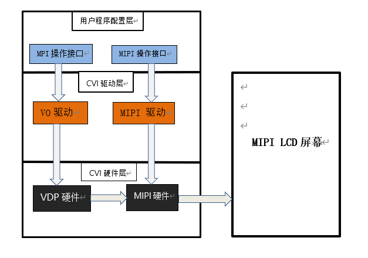

2. MIPI DSI¶
概述
The Display Serial Interface（DSI）接口是移动行业处理器接口联盟 （Mobile Industry Processor Interface alliance,MIPI联盟） 定义的一种高速串行接口，主要用于处理器和显示模块之间的连接。
本章介绍如何在CVITEK处理器解决方案上开发调试MIPI LCD 屏，以帮助客户有序快速开发MIPI LCD 业务。
2.1. 环境准备¶
2.1.1. MIPI DSI 屏幕接口介绍¶
MIPI DSI 屏幕一般有以下几种信号，如图所示。
mipi 时钟线（CLK）
mipi 数据线（DATA），最大为 4Lane（仅可以为1/2/4Lane）
背光控制信号（BACKLIGHT）
复位引脚 （RESET）
Panel电源供电（POWER）
MIPI DSI 接口连线示意图

2.1.2. 硬件连线确认¶
检查硬件连线，确认无异常。具体有些引脚差异，需对照屏幕厂商提供的规格书及电路原理图确认。
2.2. 配置MIPI屏¶
根据上节环境准备的内容，在接口和连线上了解了屏幕对接的配置，在这一章节中将对屏幕对接时在软件方面需要进行的配置进行说明。
CVITEK 有两种方案进行MIPI屏幕的对接，分别是在u-boot及kernel中进行屏的初始化，区别在于u-boot中进行初始化后，开机可以显示客户的logo图片，而带屏的产品基本都会有显示logo的需求。实际应用中根据需求二者选其一。
2.2.1. 在u-boot中配置MIPI屏¶
u-boot中配置MIPI屏是通过CVITEK开发的showlogo命令，设备上电后，敲回车进入u-boot命令行，printenv可以看到showlogo命令（不同板卡命令会有区别），bootcmd在引导内核之前会执行该命令进行屏的初始化并显示logo。
示例：
showlogo=mmc dev 0;mmc read 0x84080000 0xA000 0x400; cvi_jpeg 0x84080000 0x81800000 0x80000; startvo 0 8192 0;startvl 0 0x84080000 0x81800000 0x80000 32;setvobg 0 0xffffffff
本文档重点讲解屏的初始化部分，显示logo具体请参考《CV184X开机画面使用指南》。其中，屏的初始化部分在“startvo 0 8192 0”中实现。
2.2.1.1. 配置MIPI Tx设备属性¶
根据屏的规格书，实现每个屏的配置头文件，并放置在u-boot-2021.10/include/cvitek/cvi_panels/下，客户可以参照其余的头文件模板新增自己的panel头文件。
combo_dev_cfg_s结构体定义
struct combo_dev_cfg_s {
unsigned int devno;
enum mipi_tx_lane_id lane_id[LANE_MAX_NUM];
enum output_mode_e output_mode;
enum video_mode_e video_mode;
enum output_format_e output_format;
struct sync_info_s sync_info;
unsigned int pixel_clk;
bool lane_pn_swap[LANE_MAX_NUM];
};
成员名称 |
描述 |
|---|---|
devno |
MIPI Tx设备号，默认0 |
lane_id |
主控端和屏端Lane号的对应关系，未使用的Lane填-1即可。 共5个成员，依序分别代表主控端的MIPI_TX_0~MIPI_TX_4， 实际填写的内容需要根据对应到屏端的MIPI lane号。 例如，第一个成员是主控MIPI_TX_0，查电路原理图，对应到屏端的MIPI lane3， 就填写为MIPI_TX_LANE_3。 对应关系不正确，将导致屏幕无法点亮。 |
output_mode |
MIPI Tx输出模式，默认OUTPUT_MODE_DSI_VIDEO |
video_mode |
MIPI Tx视频模式，默认BURST_MODE |
output_format |
MIPI Tx输出格式，默认OUT_FORMAT_RGB_24_BIT |
sync_info |
MIPI Tx设备的同步信息 |
pixel_clk |
像素时钟，单位为KHz。 计算公式： pixel_clk=(htotal*vtotal)*fps/1000 其中： htotal=vid_hsa_pixels+ vid_hbp_pixels+ vid_hfp_pixels+ vid_hline_pixels vtotal= vid_vsa_lines+ vid_vbp_lines+ vid_vfp_lines+ vid_active_lines fps:帧率，默认60 lane_clk根据pixel_clk反推，换算公式： lane_clk= pixel_clk*24/4/2(24表示RGB888每个pixel占24bits， 4表示使用了4条Data Lane，2表示mipi clk是双边沿触发) |
lane_pn_swap |
MIPI Tx的Lane P/N极是否交换 true：交换 false:不交换 |
combo_dev_cfg_s中 sync_info（MIPI Tx 设备的同步信息）比较难配置， 下面详细介绍它的配置方法。一般开始会根据屏厂提供的规格书填写参考值， 还有问题再根据现象调整。
sync_info_s结构体定义
struct sync_info_s {
unsigned short vid_hsa_pixels;
unsigned short vid_hbp_pixels;
unsigned short vid_hfp_pixels;
unsigned short vid_hline_pixels;
unsigned short vid_vsa_lines;
unsigned short vid_vbp_lines;
unsigned short vid_vfp_lines;
unsigned short vid_active_lines;
bool vid_vsa_pos_polarity;
bool vid_hsa_pos_polarity;
};
成员名称 |
描述 |
|---|---|
vid_hsa_pixels |
水平同步脉冲(HSA)，单位为像素 |
vid_hbp_pixels |
水平消隐后肩(HBP)，单位为像素 |
vid_hfp_pixels |
水平消隐前肩(HFP)，单位为像素 |
vid_hline_pixels |
水平有效区(HACT)，单位为像素 |
vid_vsa_lines |
垂直同步脉冲(VSA)，单位为行 |
vid_vbp_lines |
垂直消隐后肩(VBP)，单位为行 |
vid_vfp_lines |
垂直消隐前肩(VFP)，单位为行 |
vid_active_lines |
垂直有效区(VACT)，单位为行 |
vid_vsa_pos_polarity |
垂直有效信号的极性，0为高有效，1为低有效 |
vid_hsa_pos_polarity |
水平有效信号的极性，0为高有效，1为低有效 |
MIPI DSI协议下MIPI像素区域示意图

hs_settle_s结构体定义
struct hs_settle_s {
unsigned char prepare;
unsigned char zero;
unsigned char trail;
};
成员名称 |
描述 |
|---|---|
prepare |
MIPI Tx prepare信号，默认值6 |
zero |
MIPI Tx zero信号，默认值32 |
trail |
MIPI Tx trail信号，默认值1 |
MIPI Tx时序图

示例：
const struct combo_dev_cfg_s dev_cfg = {
.devno = 0,
.lane_id = {MIPI_TX_LANE_3, MIPI_TX_LANE_0, MIPI_TX_LANE_CLK, MIPI_TX_LANE_2, MIPI_TX_LANE_1},
.lane_pn_swap = {false, false, false, false, false},
.output_mode = OUTPUT_MODE_DSI_VIDEO,
.video_mode = BURST_MODE,
.output_format = OUT_FORMAT_RGB_24_BIT,
.sync_info = {
.vid_hsa_pixels = 30,
.vid_hbp_pixels = 100,
.vid_hfp_pixels = 100,
.vid_hline_pixels = 800,
.vid_vsa_lines = 4,
.vid_vbp_lines = 16,
.vid_vfp_lines = 10,
.vid_active_lines = 1280,
.vid_vsa_pos_polarity = false,
.vid_hsa_pos_polarity = true,
},
.pixel_clk = 80958,
};
const struct hs_settle_s hs_timing_cfg = { .prepare = 6, .zero = 32, .trail = 1 };
2.2.1.2. 配置屏幕初始化序列¶
屏幕一般都有初始化的过程， MIPI LCD 屏是通过 MIPI Tx D-PHY 接口来发送指定类型的数据包。初始化序列由屏厂商提供。
屏的初始化序列一般包括像素格式、数据刷新方向、Gamma 配置等，初始化序列中每一个指令具体含义，请在屏厂提供的规格书或者Driver IC Datasheet中查找。初始化序列是通过MIPI Tx的Data Lane0在LP模式下发送，发送结束后会切换到HS模式。
dsc_instr 结构体定义
struct dsc_instr {
u8 delay;
u8 data_type;
u8 size;
u8 *data;
};
屏幕厂商提供的初始化序列一般有寄存器地址和对应的数据，需要根据屏幕厂商给的序列，填充数据类型、数据地址及数据。
成员名称 |
描述 |
|---|---|
delay |
发送完此命令后，延时的毫秒数 |
data_type |
写命令数据类型，即 DCS(DisplayCommandSet)(指令集)中的Data Type。根据数据个数选择数据类型。 类型1、当只有寄存器地址没有数据时，数据类型选择0x05； 类型2、有寄存器地址和一个数据时，数据类型选择0x15 或者 0x23； 类型3、有寄存器地址且数据个数大于等于两个，数据类型一般用0x29或者0x39。 一般情况下通用，具体使用请咨询屏幕厂商。 |
size |
寄存器地址和数据个数之和。 例如当只有一个寄存器地址，填1； 当有一个寄存器地址和1个数据填2；一个寄存器地址和2个数据填3，依此类推。 |
data |
命令数据指针。 寄存器地址和数据。第一个一定是寄存器地址，接在后面的是数据， 数据可以没有或者有多个。 |
注：对于命令数据类型参数的配置的选择，需要咨询厂商。如果没有得到厂商支持，建议没有数据时选择 0x05，有一个数据时选择 0x15，多个数据时选择 0x29。
示例：
static u8 data_xxxx_0[] = { 0xFF, 0x98, 0x81, 0x03 };
static u8 data_xxxx_1[] = { 0x01, 0x00 };
static u8 data_xxxx_2[] = {0x02, 0x00 };
......
static u8 data_xxxx_n[] = { 0x11 };
static u8 data_xxxx_n+1[] = { 0x29 };
const struct dsc_instr dsi_init_cmds[] = {
{ .delay = 0, .data_type = 0x29, .size = 4, .data = data_xxxx_0 },
{ .delay = 0, .data_type = 0x15, .size = 2, .data = data_xxxx_1 },
{ .delay = 0, .data_type = 0x15, .size = 2, .data = data_xxxx_2 },
......
{ .delay = 120, .data_type = 0x05, .size = 1, .data = data_xxxx_n },
{ .delay = 20, .data_type = 0x05, .size = 1, .data = data_xxxx_n+1 },
}
2.2.1.3. 添加头文件的引用¶
添加对该新增的头文件的引用，在u-boot-2021.10/include/cvitek/cvi_panels/cvi_panels.h中增加对上两节中新增头文件的引用。
示例：
#ifdef MIPI_PANEL_HX8394
#include "dsi_hx8394_evb.h"
static struct panel_desc_s panel_desc = {
.panel_name = "HX8394-720x1280",
.dev_cfg = &dev_cfg_hx8394_720x1280,
.hs_timing_cfg = &hs_timing_cfg_hx8394_720x1280,
.dsi_init_cmds = dsi_init_cmds_hx8394_720x1280,
.dsi_init_cmds_size = ARRAY_SIZE(dsi_init_cmds_hx8394_720x1280)
};
#endif
2.2.1.4. 配置MIPI屏RESET管脚¶
在u-boot-2021.10/drivers/video/cvitek/cvi_mipi.c的mipi_tx_set_combo_dev_cfg函数中增加RESET/POWER/BACKLIGHT的控制。
MIPI 屏一般RESET管脚用的是 GPIO 口。所以需要对 GPIO 口进行配置，同时进行屏的复位操作。
查询硬件原理图，获取RESET管脚对应的管脚名。
对照《CV184X_PINOUT_CN》找到管脚对应的GPIO组号及序号。
修改build/boards/default/dts/cv184x/cv184x_base.dtsi中vo节点reset为对应的值。
配置RESET所用的 GPIO 的复位操作时序。
屏的复位操作需要参考屏幕的说明书，若无复位操作或者复位的时序与屏幕要求的不匹配，或者电平不匹配，屏幕可能会无法点亮或者工作异常。一般而言会是high-low-high的电平变化，具体请参照屏的规格书。
示例：
假设屏幕的RESET管脚是GPIOE 2，复位电压为低，在 build/boards/default/dts/cv184x/cv184x_base.dtsi修改如下：
reset-gpio = <&porte 2 GPIO_ACTIVE_LOW>;
配置如下：
gpio_request_by_name(dev, “reset-gpio”, 0, &priv->ctrl_gpios.disp_reset_gpio, GPIOD_IS_OUT | GPIOD_IS_OUT_ACTIVE);
操作如下：
dm_gpio_set_value(&ctrl_gpios.disp_reset_gpio, ctrl_gpios.disp_reset_gpio.flags & GPIOD_ACTIVE_LOW ? 0 : 1);
mdelay(10);
dm_gpio_set_value(&ctrl_gpios.disp_reset_gpio, ctrl_gpios.disp_reset_gpio.flags & GPIOD_ACTIVE_LOW ? 1 : 0);
mdelay(10);
dm_gpio_set_value(&ctrl_gpios.disp_reset_gpio, ctrl_gpios.disp_reset_gpio.flags & GPIOD_ACTIVE_LOW ? 0 : 1);
mdelay(100);
这几句的效果将会是RESET管脚产生一个high-low-high的电平变化
2.2.1.5. 配置MIPI屏POWER管脚¶
MIPI屏的POWER控制一般也是用GPIO。通常只需拉高或拉低管脚电平即可控制MIPI屏的供断电。有的屏也可能直接供电，这样的话软件就无需控制。
配置方法与上节RESET管脚的方法一致
示例：
假设屏幕的POWER管脚是GPIOE 1，工作电压为高， 在build/boards/default/dts/cv184x/cv184x_base.dtsi修改如下：
power-ct-gpio = <&porte 1 GPIO_ACTIVE_HIGH>;
如不需要配置POWER直接删掉即可。
配置如下：
gpio_request_by_name(dev, “power-ct-gpio”, 0, &priv->ctrl_gpios.disp_power_ct_gpio, GPIOD_IS_OUT | GPIOD_IS_OUT_ACTIVE);
操作如下：
dm_gpio_set_value(&ctrl_gpios.disp_power_ct_gpio, ctrl_gpios.disp_power_ct_gpio.flags & GPIOD_ACTIVE_LOW ? 0 : 1);
2.2.1.6. 配置MIPI屏BACKLIGHT管脚¶
MIPI屏BACKLIGHT可以配置为GPIO或者PWM。
2.2.1.6.1. 配置为GPIO¶
配置方法与上节RESET管脚的方法一致
示例：
假设屏幕的PWM管脚是GPIOE 0，工作电压为高， 在build/boards/default/dts/cv184x/cv184x_base.dtsi修改如下：
pwm-gpio = <&porte 0 GPIO_ACTIVE_HIGH>;
如不需要配置POWER直接删掉即可。
配置如下：
gpio_request_by_name(dev, “pwm-gpio”, 0, &priv->ctrl_gpios. disp_pwm_gpio, GPIOD_IS_OUT | GPIOD_IS_OUT_ACTIVE);
操作如下：
dm_gpio_set_value(&ctrl_gpios.disp_pwm_gpio, ctrl_gpios.disp_pwm_gpio.flags & GPIOD_ACTIVE_LOW ? 0 : 1);
2.2.1.6.2. 配置为PWM¶
MIPI屏的BACKLIGHT一般通过PWM，这样可实现亮度调节。
查询硬件原理图，获取BACKLIGHT管脚对应的管脚名。
在u-boot-2021.10/board/cvitek/cv181x/board.c的board_init函数中，配置BACKLIGHT管脚复用功能为PWM功能。
对照《CV184X Preliminary Datasheet》外围设备PWM章节的寄存器信息，配置PWM输出的周期、占空比、使能。
PWM基地址信息，其余寄存器信息具体请参考《CV184X Preliminary Datasheet》，CV184X有3组PWM，每组6个通道
pwm0 |
0x030010a4 |
pwm1: |
0x030010d0 |
pwm2: |
0x03001058 |
注意：这里的PWM0~2是PWM组号，而原理图或者pinlist中写的是PWM0~PWM17，如当看到PWM1，对应的是上述表格第0组的第一个通道PWM0_1。
示例：
假设屏幕的BACKLIGHT管脚是PWM8
devmem 0x030010A4 32 0x00000004 //复用相应的引脚为PWM echo 2 > /sys/class/pwm/pwmchip6/export //配置待操作的PWM编号 echo 1000000 >/sys/class/pwm/pwmchip6/pwm2/period // 设置PWM一个周期的持续时间（单位ns） echo 500000 >/sys/class/pwm/pwmchip6/pwm2/duty_cycle // 设置一个周期中的”ON”时间（单位ns），即占空比 echo 1 >/sys/class/pwm/pwmchip6/pwm2/enable // 使能 PWM 输出
2.2.1.7. 配置u-boot环境变量¶
修改u-boot-2021.10/include/configs/cv184x-asic.h中的u-boot环境变量参数
示例：
#define SHOWLOGOCMD LOAD_LOGO CVI_JPEG START_VO START_VL SET_VO_BG
LOAD_LOGO将图片由MISC分区读到DRAM，CVI_JPEG将图片解析到指定位置，START_VO和START_VL开启VO并将logo显示在居中位置，SET_VO_BG设置VO背景色，屏幕除logo之外的其他区域由此颜色填充。
2.2.1.8. 更换logo图片¶
将客户的logo图片放置在该路径下build/tools/common/bootlogo/，编译执行build_all后会拷贝至image生成路径下。
注意： I80屏幕需要24bit BMP图片，其他需要YUV420格式jpg 。
2.2.1.9. 编译烧写验证¶
在上述步骤均完成以后，重新编译烧写新的u-boot。上电，敲回车进入u-boot命令行。执行run showlogo，顺利的话就可以看到屏幕显示出logo图片。如果未显示出logo，请确认以下。
确认背光点亮
确认RESET管脚电平状态有达到预期
确认屏幕供电正常
执行mw 0x0a094094 0x0701000a，输出VO的test pattern，假如屏幕初始化成功，此时会看到colorbar
test pattern寄存器如下图

发现有以上任何异常请回头检查此前的流程是否设置正确及达到预期。
假如以上均未发现异常，建议查看Driver IC datasheet或直接咨询屏幕厂商，如何开启屏的BIST mode，通常是调整初始化序列中的某个寄存器值，会显示colorbar等。
假如BIST mode不正常，则需要再检查MIPI Lane顺序、RESET、POWER、PWM等是否配置正确，并使用万用表/示波器等确认电路电平状态符合预期，假如均符合预期，则可能是屏幕本身的问题，请咨询屏幕厂商。
假如BIST正常，则说明以上配置正确，硬件电路没有异常，这时通常需要调整sync_info_s中的各参数。
2.2.2. 在kernel中配置MIPI屏¶
在kernel中配置MIPI屏的方法跟在u-boot中几乎是一样的，只是实现流程不一样。当无需显示logo的时候，可选择此种方式。
另外，也可以先用kernel方式调通，再移植到u-boot，避免频繁烧写u-boot。
kernel中对接 MIPI屏幕基本框图
{kind=link}

2.2.2.1. 配置MIPI Tx设备属性¶
根据屏的规格书，实现每个屏的配置头文件，并放置在路径cvi_mpi/component/panel/下，客户可以参照其余的头文件模板新增自己的panel头文件。
参见2.2.1.1节
2.2.2.2. 配置屏幕初始化序列¶
参见2.2.1.2节
2.2.2.3. 添加头文件的引用¶
添加对该新增的头文件的引用，在cvi_mpi/sample_app/panel/sample_panel.c中增加对上两节中新增头文件的引用。
示例：
如要点屏HX8394_EVB，首先在cvi_mpi/sample_app/panel/sample_panel.h中include该屏幕的头文件dsi_hx8394_evb.h，然后确保cvi_mpi/sample_app/panel/sample_panel.c文件中 的字符数组static char *s_panel_model_type_arr[ ]里有”HX8394_EVB”字符，没有则自己添加，接着在该文件屏幕枚举类型PANEL_MODEL中添加与该字符索引值相等的枚举量HX8394_EVB，最后 在SAMPLE_SET_PANEL_DESC函数中添加对该屏幕相关参数进行调用的case，如下所示：
case DSI_PANEL_HX8394_EVB:
g_panel_desc.panel_type = PANEL_MODE_DSI;
g_panel_desc.stdsicfg.dev_cfg = &dev_cfg_hx8394_720x1280;
g_panel_desc.stdsicfg.hs_timing_cfg = &hs_timing_cfg_hx8394_720x1280;
g_panel_desc.stdsicfg.dsi_init_cmds = dsi_init_cmds_hx8394_720x1280;
g_panel_desc.stdsicfg.dsi_init_cmds_size = ARRAY_SIZE(dsi_init_cmds_hx8394_720x1280);
break;
2.2.2.4. 配置MIPI屏RESET、POWER、BACKLIGHT管脚¶
方法1：
在路径build/boards/default/dts/cv184x/下找到对应的dts文件，配置MIPI Tx的gpio信息，如果没有该管脚，则直接不写即可。
示例：
mipi_tx: mipi_tx {
compatible = "cvitek,mipi_tx";
reset-gpio = <&porte 2 GPIO_ACTIVE_LOW>;
pwm-gpio = <&porte 0 GPIO_ACTIVE_HIGH>;
power-ct-gpio = <&porte 1 GPIO_ACTIVE_HIGH>;
clocks = <&clk CV181X_CLK_DISP_VIP>, <&clk CV181X_CLK_DSI_MAC_VIP>;
clock-names = "clk_disp", "clk_dsi";
};
说明：
pwm-gpio = <&porte 0 GPIO_ACTIVE_HIGH>;
为调试方便，背光可先用GPIO控制，切记先不要在u-boot中配置pinmux为PWM功能，否则可能无法控制。
后续根据需求，如果需要调节亮度，再在u-boot中配置pinmux功能为PWM，删除dts中的此行，同时app中用PWM方式控制。
系统启动后加载MIPI Tx驱动方式（一般会自动加载，可先用lsmod查看是否已加载）：
insmod /mnt/system/ko/cvi_mipi_tx.ko
这样当驱动加载后，会根据dts中的GPIO信息，自动申请这些GPIO，并初始化成对应的电平状态。
方法2：
无需修改内核dts文件。
系统启动加载MIPI Tx驱动方式：
insmod /mnt/system/ko/cvi_mipi_tx.ko gpio=354,0,353,1,352,1
这三个GPIO依序分别为RESET、POWER、PWM
当驱动加载后，驱动会优先使用gpio参数中的信息自动申请GPIO号对应的GPIO，并初始化成其后的电平状态。如果没有写gpio参数，驱动会根据dts中的GPIO信息申请GPIO。如果没有该管脚，则GPIO号和电平状态均写-1即可。
同样，为调试方便，背光可先用GPIO控制，先不要在u-boot中配置pinmux为PWM功能。后续需要调节亮度，再在u-boot中配置pinmux功能为PWM，同时app中用PWM方式控制，并将第三个GPIO号和电平状态写成-1即可。
方法3：
直接在应用层直接控制GPIO。
示例： 假设reset：GPIOE2，pwm：GPIOE0，power：GPIOE1，可以用cat /sys/kernel/debug/gpio指令查看芯片的gpio配置，可依次得到gpiochip0至gpiochip4的编号范围，依次对应着GPIOA至GPIOE的编号范围， 若得出gpiochip4的范围是352至383，则对于所要拉的GPIOE2来说，下面echo操作的号码可由352+2=354得到。
因此需要以下操作去拉对应引脚：
1. echo 352 > /sys/class/gpio/export
echo 353 > /sys/class/gpio/export
echo 354 > /sys/class/gpio/export
2. echo out > /sys/class/gpio/gpio352/direction
echo out > /sys/class/gpio/gpio353/direction
echo out > /sys/class/gpio/gpio354/direction
3. echo 1 > /sys/class/gpio/gpio352/value
echo 1 > /sys/class/gpio/gpio353/value
echo 1 > /sys/class/gpio/gpio354/value
echo 0 > /sys/class/gpio/gpio354/value
echo 1 > /sys/class/gpio/gpio354/value
说明：
为调试方便，背光可先用GPIO控制，切记先不要在u-boot中配置pinmux为PWM功能，否则可能无法控制。
后续根据需求，如果需要调节亮度，在u-boot中配置pinmux功能为PWM，同时app中用PWM方式控制。
2.2.2.5. 编译验证¶
执行build_middleware编译middleware，在路径cvi_mpi/sample_app/panel/下会生成sample_panel可执行文件。 该程序和在u-boot中“startvo 0 65536 0”做的事情是一样的，切换到LP模式，设置MIPI Tx设备属性并通过Data Lane0向屏幕发送初始化序列，然后切回HS模式。
将sample_panel拷贝至设备，执行命令./sample_panel后会弹出该命令的执行方式，按提示运行即可。
示例：./sample_panel –panel=HX8394_EVB
说明：
RESET初始电平设置为low，将需要high-low-high时序变化。
RESET初始电平设置为high，将需要low-high-low时序变化。
使能VO的test pattern，寄存器如下图。执行devmem 0x0a094094 32 0x0701000a将会看到colorbar。
若colorbar未正常显示，请回头检查此前的流程是否设置正确及达到预期。
假如此前流程均未发现异常，建议查看Driver IC datasheet或直接咨询屏幕厂商，如何开启屏的BIST mode，通常是调整初始化序列中的某个寄存器值，会显示colorbar等。
假如BIST mode不正常，则需要再检查MIPI Lane顺序、RESET、POWER、PWM等是否配置正确，并使用万用表/示波器等确认电路电平状态符合预期，假如均符合预期，则可能是屏幕本身的问题，请咨询屏幕厂商。
假如BIST正常，则说明以上配置正确，硬件电路没有异常，这时通常需要调整sync_info_s中的各参数。
2.2.3. 在双系统中配置MIPI屏¶
在双系统中配置MIPI屏的方法和在上述单系统中几乎是一样的，只是有一些小区别。下面说明一下其中的异同。
对接MIPI屏幕基本框图
其中，上图的VO与MIPI驱动均在小核alios中完成。
2.2.3.1. 配置MIPI Tx设备属性¶
根据屏的规格书，实现每个屏的配置头文件，并放置在路径cvi_mpi/component/panel/和 cvi_alios/components/cvi_mmf_sdk/cvi_panel/下，客户可以参照其余的头文件模板新增自己的panel头文件。
参见2.2.1.1节
2.2.3.2. 打开cvi_alios中的配置开关¶
在cvi_alios/solutions/{normboot/fastboot}/customization/{project_config}/package.yaml.turnkey中打开对应芯片和屏幕类型的开关，
示例，若选择CONFIG_CV1842HP_GC8613芯片，CONFIG_PANEL_HX8394屏幕，则打开如下开关：
CONFIG_CV1842HP_GC8613: 1
CONFIG_PANEL_HX8394: 1
注意CONFIG_CHIP_cv1842hp芯片若需同时支持sensor和panel，需改装硬件，并按需修改cvi_alios/solutions/normboot/customization/cv1842hp_gc8613/src/custom_platform.c 中_MipiTxPinmux()接口里的引脚复用。
2.2.3.3. 配置屏幕初始化序列¶
参见2.2.1.2节
2.2.3.4. 添加头文件的引用¶
参见2.2.2.3节
2.2.3.5. 配置MIPI屏RESET、POWER、BACKLIGHT管脚¶
在cvi_alios/solutions/normboot/customization/cv1842hp_gc8613/src/custom_platform.c中_MipiTxPinmux接口里 添加对RESET、POWER、BACKLIGHT管脚的复用，然后直接在应用层直接控制GPIO。
示例：
对于CONFIG_CHIP_cv1842hp芯片，一般要拉引脚为：reset：GPIOE2，pwm：GPIOE0，power：GPIOE01。
因此需要以下操作去拉对应引脚：
devmem 0x03022004 32 0x0
devmem 0x03022000 32 0x0
echo 352 > /sys/class/gpio/export
echo 353 > /sys/class/gpio/export
echo 354 > /sys/class/gpio/export
echo out > /sys/class/gpio/gpio352/direction
echo out > /sys/class/gpio/gpio353/direction
echo out > /sys/class/gpio/gpio354/direction
echo 1 > /sys/class/gpio/gpio354/value
echo 1 > /sys/class/gpio/gpio352/value
echo 1 > /sys/class/gpio/gpio353/value
echo 0 > /sys/class/gpio/gpio354/value
echo 1 > /sys/class/gpio/gpio354/value
对于CONFIG_CHIP_cv1842cp芯片，一般要拉引脚为：reset：GPIOA15，pwm：GPIOA18，power：GPIOA19。
因此需要以下操作去拉对应引脚：
devmem 0x0300103c 32 0x3
devmem 0x03001068 32 0x3
devmem 0x03001064 32 0x3
echo 495 > /sys/class/gpio/export
echo 498 > /sys/class/gpio/export
echo 499 > /sys/class/gpio/export
echo out > /sys/class/gpio/gpio495/direction
echo out > /sys/class/gpio/gpio498/direction
echo out > /sys/class/gpio/gpio499/direction
echo 1 > /sys/class/gpio/gpio495/value
echo 1 > /sys/class/gpio/gpio498/value
echo 1 > /sys/class/gpio/gpio499/value
echo 0 > /sys/class/gpio/gpio495/value
echo 1 > /sys/class/gpio/gpio495/value
上述代码中devmem写寄存器指令是为了复用相应的引脚，若已完成相关复用，可不执行该指令。
2.2.3.6. 编译验证¶
参见2.2.2.5节